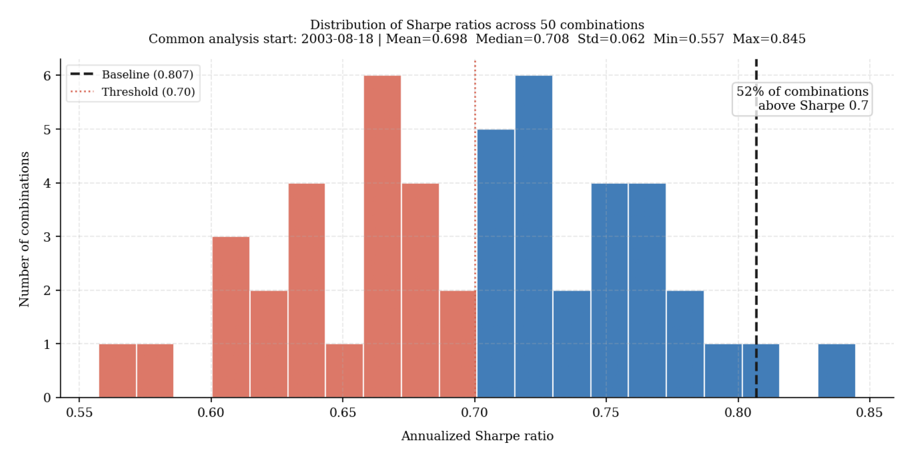
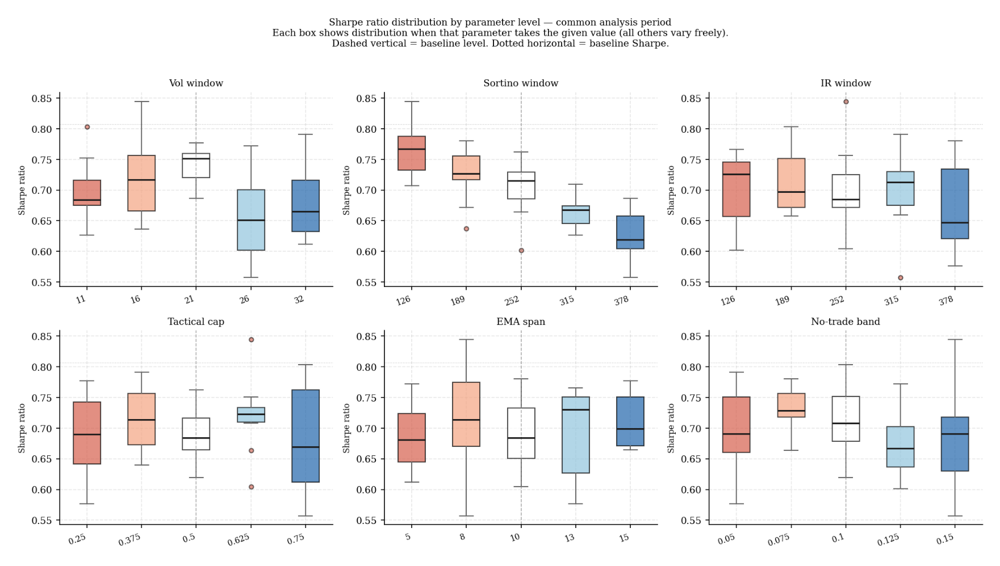
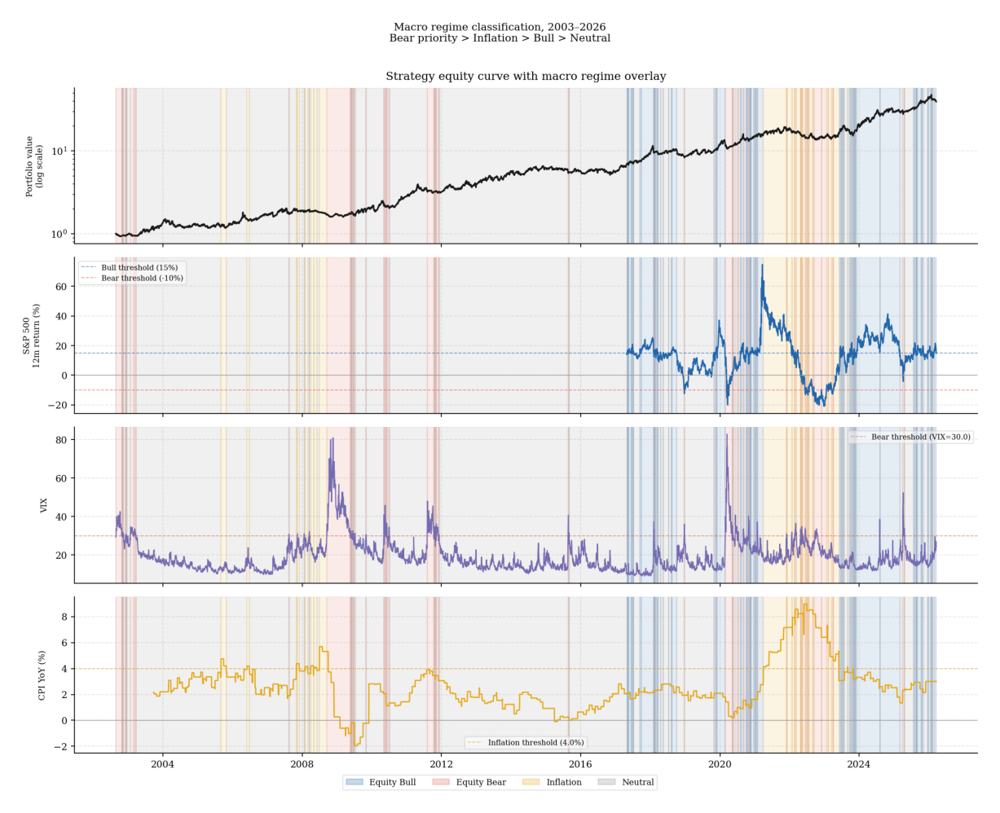
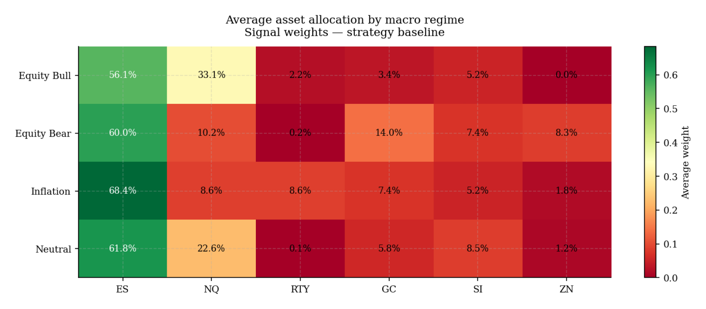
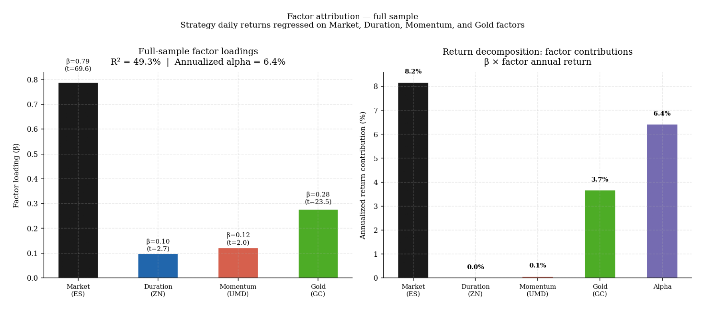
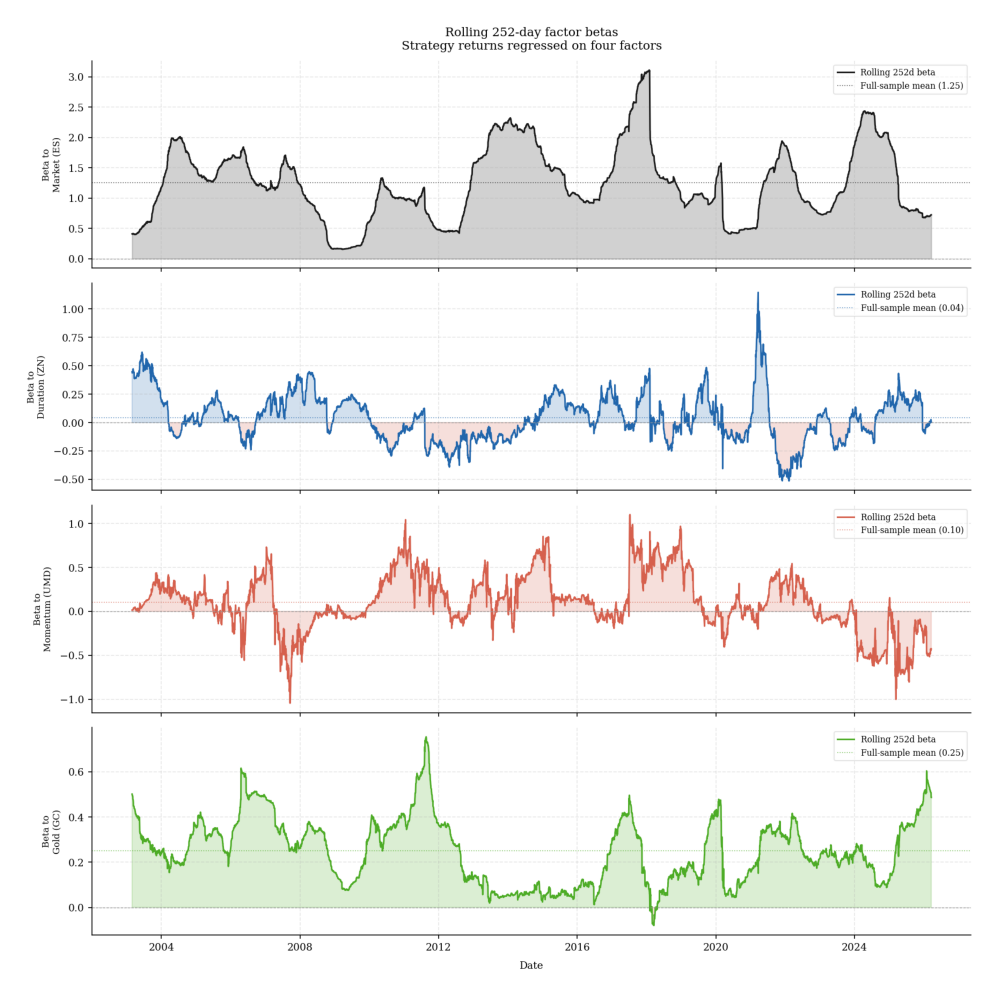

8. From framework to strategy: implementation and live evidence
The seven preceding sections built a framework for evaluating investment return sources, constructing portfolios, and assessing whether active programs justify their place alongside a passive core. This section applies that framework directly to a specific systematic strategy — not as an illustration, but as the strategy this research was written to support.
The standards the framework establishes are demanding. A strategy’s return sources should be identifiable. Its portfolio contribution should be demonstrable beyond standalone Sharpe. Its implementation should be honest about costs, capacity, and signal decay. It should have been stress-tested against the regimes where its logic is most likely to fail. The analysis in this section applies each of those standards in turn.
The instrument universe and why these six futures
The strategy trades six liquid futures contracts: ES (S&P 500), NQ (Nasdaq-100), RTY (Russell 2000), GC (Gold), SI (Silver), and ZN (10-year Treasury). The selection was driven by three criteria operating simultaneously.
The first is liquidity. All six instruments trade on regulated U.S. exchanges with deep intraday markets, tight spreads, and sufficient open interest to execute the strategy’s position sizes without material market impact. This is not a trivial constraint — futures markets vary enormously in liquidity, and selecting instruments at the margin of acceptable liquidity introduces execution risk that backtests systematically underestimate.
The second is asset class breadth within a long-term portfolio context. The universe spans U.S. equity (three contracts covering large-cap growth, broad large-cap, and small-cap), real assets (gold and silver), and fixed income (ten-year Treasury duration). Each represents a distinct economic exposure that would belong in a considered long-term allocation. This criterion deliberately excluded highly correlated instruments — adding multiple currency pairs, commodity sub-sectors, or short-term interest rate contracts would have increased nominal breadth without adding genuine diversification. The correlation structure of the six instruments is designed to give the IR-based rotation signal meaningful variation to exploit.
The third is availability on the Darwinex Zero platform, which is the live deployment environment for the strategy. The instrument set reflects what is practically tradeable within that infrastructure. As alternative platforms and data sources become available — particularly professional futures data providers with clean back-adjustment — the universe will be reviewed. The current six represent the intersection of what is liquid, structurally sensible, and operationally accessible.
Strategy architecture
The strategy is a systematic multi-asset allocator built around two signal layers operating at different frequencies.
The volatility-targeting layer computes a rolling Sortino ratio for each asset using a 252-day lookback window. The ratio is then z-scored over the same window to produce a normalized signal bounded by the tanh function. This signal drives the target downside volatility for each asset, ranging between 10 and 20 percent annualized. Assets with strongly positive Sortino z-scores are allocated higher target volatility; assets with negative or weakly positive scores receive lower target volatility. The practical effect is that leverage increases when recent risk-adjusted performance is strong and decreases when it deteriorates. This is the primary mechanism for dynamic beta management discussed in the factor attribution section.
The tactical allocation layer computes a rolling information ratio of each alternative asset versus ES over a 252-day window. The IR measures how consistently the alternative has outperformed the equity core on a risk-adjusted basis. High-IR alternatives receive a larger weight in the tactical sleeve, which can represent up to 50 percent of the total portfolio. Low-IR alternatives receive zero or minimal allocation. The ES core always maintains a residual weight equal to one minus the sum of alternative weights, ensuring the strategy remains net long equity at all times.
The two layers combine to produce a daily target allocation that is then smoothed with a 10-day exponential moving average to reduce unnecessary turnover. A 10 percent notional no-trade band prevents rebalancing when the position drift is small relative to the signal change, reducing commission drag without meaningfully delaying regime transitions.
The connection to the framework is direct. Section 4’s return source taxonomy explains what the strategy harvests: equity risk premium from the ES core, real asset carry from gold and silver, and duration from ZN in risk-off environments. Section 5’s portfolio construction principles explain why the 50 percent tactical sleeve cap was chosen — the position sizing table showed that above this level the drawdown cost exceeds the return benefit. Section 6’s regime conditioning explains why the signals use 12-month lookback windows — they are designed to identify sustained performance differences, not short-term noise. Section 7’s cost hierarchy explains where the strategy sits in a broader portfolio: as a carefully justified active program that can sit alongside a simpler passive core, not as a replacement for one.
Backtest results
The baseline strategy was backtested from 2002 to March 2026 using Yahoo Finance continuous futures data with $5 per contract commission. All signals are lagged one day to prevent look-ahead bias. The common analysis start date is 2003-08-18, reflecting the warm-up period required for the longest signal windows to initialize.
| Metric | Strategy | ES benchmark | ES-only (levered) |
|---|---|---|---|
| Total return | 3,699% | 601% | 2,250% |
| CAGR | 16.8% | 8.6% | 14.3% |
| Ann. volatility | 22.3% | 19.0% | 23.4% |
| Sharpe ratio | 0.807 | 0.530 | 0.689 |
| Sortino ratio | 1.095 | 0.745 | 0.936 |
| Max drawdown | −30.2% | −57.1% | −42.4% |
The strategy produces a Sharpe ratio of 0.807 and a Sortino ratio of 1.095 over the full backtest period, compared to 0.530 and 0.745 for the ES buy-and-hold benchmark. The maximum drawdown of −30.2% compares favorably to −57.1% for the benchmark and −42.4% for the levered ES-only alternative. The total return of 3,699% over 22 years reflects the combination of genuine return generation and the power of compounding over a long period.
The performance gap between the strategy and the ES benchmark is not primarily due to leverage — the ES-only levered alternative (which applies the same Sortino-based leverage but holds only ES) produces a CAGR of 14.3% and Sharpe of 0.689. The additional 2.5 percentage points of CAGR and 0.118 Sharpe points above the levered ES baseline reflect the value of tactical allocation across the alternative assets.
Parameter robustness
A strategy that performs well only at its exact design parameters is a backtest artifact rather than a robust investment program. The robustness analysis addresses this directly through two complementary methods.
The one-at-a-time sensitivity analysis tested each of the six key parameters — Sortino window, IR window, vol window, tactical sleeve cap, EMA smoothing span, and no-trade band — across five values ranging from −50% to +50% of the baseline. The baseline Sharpe of 0.807 was near the top of the distribution for four of the six parameters, with EMA span and no-trade band showing essentially no sensitivity to variation.
The Monte Carlo analysis used Latin Hypercube sampling to test 50 randomly chosen combinations across the full six-dimensional parameter space, with all combinations evaluated over the same common analysis start date to ensure a fair comparison. The corrected results show that 52% of combinations produced a Sharpe above 0.70 on a level playing field, with the baseline sitting at the 98th percentile of the distribution.
The most important finding from the robustness analysis is the dominant role of the Sortino window. Shorter windows (126–189 days) consistently outperform longer windows (315–378 days) — the correlation between Sortino window length and Sharpe ratio across the Monte Carlo sample is −0.77. This suggests the 252-day baseline window may be slightly longer than optimal, and a 189-day window is a candidate for a future design revision pending out-of-sample confirmation from the live deployment.


Regime decomposition
The framework established in section 6 that return estimates should condition on the prevailing macro regime. The regime decomposition applies this principle to the backtest — classifying each trading day into one of four regimes using observable FRED data and evaluating the strategy’s performance within each.
The four regimes are defined as follows. Equity Bear takes priority: any day where the trailing 12-month S&P 500 return falls below −10% or the VIX exceeds 30 is classified as Bear regardless of other conditions. Inflation applies when CPI year-on-year exceeds 4% and is rising on a three-month basis. Equity Bull applies when the trailing 12-month S&P 500 return exceeds 15%. All remaining days are Neutral.

| Regime | Days | % Sample | CAGR | Sharpe | Max DD | Win rate | Avg ES wt |
|---|---|---|---|---|---|---|---|
| Equity Bull | 837 | 14.1% | +82.2% | 3.27 | −21.8% | 58.9% | 56.1% |
| Equity Bear | 657 | 11.0% | −39.1% | −2.03 | −22.5% | 46.9% | 60.0% |
| Inflation | 575 | 9.7% | +7.5% | 0.34 | −28.8% | 53.2% | 68.4% |
| Neutral | 3884 | 65.2% | +19.9% | 0.90 | −24.5% | 56.9% | 61.8% |
Three findings from this table deserve explicit acknowledgment.
The strategy earns exceptional returns in Equity Bull regimes — a Sharpe of 3.27 and CAGR of 82.2% during the 14% of days classified as Bull. These periods drive the majority of compounded long-run return alongside the 65% Neutral regime, which delivers a solid Sharpe of 0.90. Together these two regimes account for 79% of the sample and produce all the strategy’s positive contribution.
The strategy loses money in Equity Bear regimes, at an annualized rate of −39.1% and a Sharpe of −2.03. This is the primary weakness of the design. The allocation heatmap reveals the mechanism: during Bear periods the average ES weight is 60.0% — slightly higher than the 56.1% during Bull periods. The signal does not rotate away from equity quickly enough when conditions deteriorate. The Sortino z-score and IR signals are both backward-looking by design, and they require several months of sustained deterioration before they reduce exposure materially. In a sharp, rapid bear market — 2020 is the clearest example — the strategy experiences full equity drawdown before the signal has time to act.

The Inflation regime result is mediocre but survivable — a 7.5% CAGR and 0.34 Sharpe. More concerning is the allocation pattern: during inflation periods the average ES weight rises to 68.4% while gold averages only 7.4%. This is the opposite of what an inflation-protection design would prescribe. The strategy has no explicit inflation hedge. Its gold allocation during inflation reflects only the IR signal’s backward-looking assessment of gold versus ES performance, which may lag actual inflation dynamics considerably.

Factor attribution
The factor attribution analysis decomposes the strategy’s daily returns against four systematic factors: market (ES=F daily returns), duration (ZN=F daily returns), momentum (UMD from the Ken French library), and gold (GC=F daily returns).
| Factor | Beta | T-statistic |
|---|---|---|
| Market (ES) | 0.79 | 69.6 |
| Gold (GC) | 0.28 | 23.5 |
| Duration (ZN) | 0.10 | 2.7 |
| Momentum (UMD) | 0.12 | 2.0 |
| Alpha | 6.4% ann. | 1.94 |
| R-squared | 49.3% |
The two statistically robust factor exposures are market (beta 0.79, t=69.6) and gold (beta 0.28, t=23.5). Duration and momentum are marginally significant but contribute negligibly to return attribution. The full-sample R-squared of 49.3% means roughly half the strategy’s daily return variance is explained by these four factors — the rolling R-squared averages 71.2%, suggesting the full-sample estimate is pulled down by structural breaks in factor relationships across different macro regimes.

The annualized alpha of 6.4% carries a t-statistic of 1.94 — close to but below the conventional 2.0 threshold. Over a 22-year backtest with daily data, this is the mathematically expected result for a genuine alpha of this magnitude given the residual volatility. It is not proof of skill — no backtest of any practical length can provide that — but it is consistent with a strategy that generates incremental return above a static factor exposure through dynamic leverage and tactical rotation.
The rolling beta analysis reveals an important structural feature of the strategy. While the full-sample market beta is 0.79, the rolling 252-day beta ranges from 0.16 to 3.1 with a mean of 1.25. The strategy is a dynamic beta amplifier — increasing market exposure when the Sortino signal is strongly positive and reducing it when signals deteriorate. This is entirely consistent with the design but should be understood clearly: the strategy is not a market-neutral or low-beta program. It is a leveraged equity strategy that manages exposure dynamically around an average of approximately 1.25 times the equity market.

Live deployment: Darwinex Zero evidence
The strategy has been deployed live on Darwinex Zero under the ticker UJNU since 5 March 2026. At the time of writing the live track record is approximately eight weeks old — too short for any statistical inference about skill versus luck, but sufficient to confirm that the implementation is functioning as designed.
Darwinex Zero applies a VaR normalization filter to all strategy returns before publishing them as a DARWIN index. This filter standardizes the risk profile of the published track record to a target VaR of 6.5% per month, which means the published DARWIN returns will differ from the underlying strategy returns in proportion to how far the strategy’s actual volatility diverges from that target. Investors comparing the DARWIN performance to the backtest results presented in this document should account for this normalization. The underlying strategy’s volatility targeting mechanism operates independently of the DARWIN risk filter — the two are applied sequentially, with the strategy’s own risk management layer acting first and the platform filter acting second.
The live deployment serves three specific purposes in the context of this research framework.
First, it tests whether the signal logic produces positions consistent with the theoretical framework under actual market conditions. A strategy that generates signals in backtesting but produces nonsensical or unstable positions in live trading has an implementation flaw that no amount of backtest analysis can reveal. Eight weeks of live trading confirms that the position generation, order sizing, and rebalancing mechanics are working as designed.
Second, it begins the process of building a verified, third-party-audited track record that is independent of the backtest data. The Darwinex Zero platform provides trade-level verification and standardized performance metrics that carry more evidential weight with sophisticated allocators than any self-reported backtest. The path from the current early-stage deployment to a statistically meaningful live track record requires continued performance across varied market conditions — the regime classification framework developed in section 8.5 provides the diagnostic lens for interpreting that performance as it accumulates.
Third, it creates a real-time test of the robustness findings. The Monte Carlo analysis identified the Sortino window as the dominant parameter — shorter windows outperformed consistently. The live deployment uses the 252-day baseline. If live performance is significantly below the backtest level during periods the regime classification identifies as Neutral or Bull — when the strategy should be performing well — that is a signal worth investigating. If performance is below backtest level only during Bear or Inflation regimes, that is expected behavior consistent with the regime decomposition findings.
The live track record will be reported and updated in the connected Darwinex Zero performance page as it accumulates. The appropriate evaluation horizon for drawing any conclusions about strategy quality is a minimum of 24 months of live trading across at least two distinct macro regimes — a standard that the current deployment has not yet had the time to meet.
What would constitute evidence of strategy failure
The most important intellectual discipline in systematic strategy management is defining in advance what evidence would cause you to conclude that the strategy is not working — as opposed to going through a normal period of adverse conditions that the design already anticipates.
The strategy should be considered to be failing — rather than experiencing normal variance — if any of the following conditions are met over a sustained period of at least 12 months of live trading:
Signal failure: The correlation between the Sortino z-score signal and subsequent 21-day returns falls to near zero or below across all assets simultaneously. If the core signal is providing no information, the dynamic leverage mechanism is adding noise rather than return. Normal signal degradation in individual assets during regime transitions is expected and not a failure signal.
Implementation divergence: Live position sizes and allocation weights diverge systematically from what the backtest signal would prescribe by more than the no-trade band threshold. This would indicate an execution or data integrity problem rather than a strategy problem, but the consequence is the same — the live deployment is no longer an expression of the tested strategy.
Regime-inconsistent underperformance: The strategy underperforms the ES benchmark during Neutral and Bull regimes — the two regimes where the design is intended to outperform. Bear and Inflation regime underperformance relative to the benchmark is expected and is not a failure signal. Neutral and Bull regime underperformance sustained for more than 12 months, after adjusting for the VaR normalization filter, would suggest the IR rotation signal is not adding value in the current market microstructure.
Parameter decay: The Sortino window finding from the Monte Carlo analysis — that shorter windows consistently outperform — should be tested against the live data after 24 months. If the 252-day baseline continues to underperform the 189-day alternative in out-of-sample live trading, a parameter revision is warranted.
What should not be interpreted as evidence of failure: a single quarter of poor performance in any regime, underperformance relative to the ES benchmark during Bear regimes, or drawdowns consistent with the historical maximum drawdown profile. The strategy’s maximum historical drawdown is −30.2%. An investor who exits the strategy after a 25% drawdown has applied a stricter tolerance than the backtest warranted — and section 5’s path risk discussion explains precisely why that behavioral pattern destroys value even in strategies with genuine positive expected return.